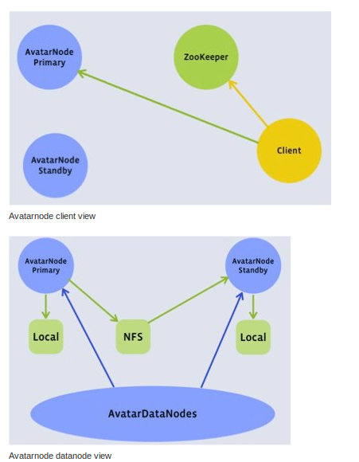

Hadoop Distributed Filesystem reliability with Namenode and Avatarnode
fb数据仓库故障有41%是源于HDFS，而如果有reliable namenode解决方案的话那么其中有90%是可以避免的。

如果primary NN挂掉的话那么就切换到standby NN. datanode会将自己的status report到两个NN这样standby NN可以得到最新的状态可以使得切换时间更短。切换是通过zk来完成的，两个NN都在zk上面注册节点，client会从zk上了解primary NN对primary NN进行操作。之间的数据同步是通过共享存储来完成的，比如NFS，对于standby NN只需要增量读取操作内容即可。 #note: 大家对担心NFS的稳定性问题，不过我是觉得NFS上面主要是一些namenode上面一些操作的log，吞吐量不会太大而且也不会打开非常多的文件，在这个场景下面还是比较合适的
